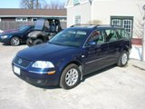
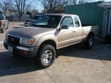
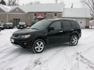
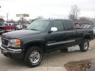
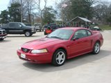
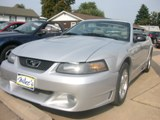
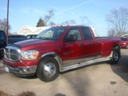

|  | $8,950 | Vin #: WVWVD63B13E015866 Year: 2 Make: Volkswagen Model: Passat Wagon GLS Transmission: Automatic Cylinders: 4 Body Style: 4 Door Color: Blue Odometer: 77896 Options: Tilt Wheel, Cruise Control, Power Locks, Power Windows, Power Steering, Anti Lock Brakes (ABS), Climate Control, Front Wheel Drive, Alloy Wheels, 4 Door, Power Drivers Seat, Bucket Seats, Luggage Rack, Power Moonroof, Power Mirrors, Rear Defroster, Keyless Entry, Tinted Glass, Driver Air Bag, Passenger Air Bag, Air Conditioning, Leather Seats, CD Player |
|  | $6,950 | Vin #: 4TASN92N0WZ176747 Year: 1998 Make: Toyota Model: Tacoma Prerunner Transmission: Automatic Cylinders: 6 Body Style: Extended Cab Color: Brown Odometer: 134857 Options: Tilt Wheel, Cruise Control, Power Locks, Power Windows, Power Steering, Rear Wheel Drive, Alloy Wheels, 2 Door, Bucket Seats, Tow Package, Power Mirrors, Keyless Entry, Driver Air Bag, Sunroof/Moonroof, Air Conditioning, CD Player |
|  | $18,990 | Vin #: JA4MS41X77U015820 Year: 2007 Make: Mitsubishi Model: Outlander XLS Transmission: Automatic Cylinders: 6 Body Style: SUV Color: Black Odometer: 76012 Options: Tilt Wheel, Cruise Control, Power Locks, Power Windows, Power Steering, Anti Lock Brakes (ABS), Climate Control, All Wheel Drive (AWD), Alloy Wheels, 4 Door, Power Drivers Seat, Heated Seats, Bucket Seats, Tow Package, Power Moonroof, Outside Temp. Display, Power Mirrors, Dual Power Seats, Rear Defroster, Keyless Entry, Driver Air Bag, Passenger Air Bag, Sunroof/Moonroof, Air Conditioning, Leather Seats, CD Player |
|  | $10,975 | Vin #: 1GTHC29U13E137693 Year: 2003 Make: GMC Model: Sierra 2500 HD SLT Transmission: Automatic Cylinders: 8 Body Style: Extended Cab Color: Charcoal Odometer: 158241 Options: Tilt Wheel, Cruise Control, Power Locks, Power Windows, Power Steering, Anti Lock Brakes (ABS), Climate Control, Rear Wheel Drive, Alloy Wheels, Power Drivers Seat, Heated Seats, Memory Seats, 40/20/40 Bench Seat, Running Boards, Tow Package, Rear Sliding Window, Power Mirrors, Dual Power Seats, Rear Defroster, Keyless Entry, Tinted Glass, Driver Air Bag, Passenger Air Bag, Air Conditioning, Leather Seats, CD Player |
|  | $6,950 | Vin #: 1FAFP42X9YF272178 Year: 2000 Make: Ford Model: Mustang GT Transmission: Automatic Cylinders: 8 Body Style: 2 Door Color: Red Odometer: 94528 Options: Tilt Wheel, Cruise Control, Power Locks, Power Windows, Power Steering, Rear Wheel Drive, Alloy Wheels, Low Profile Tires, 2 Door, Power Drivers Seat, Bucket Seats, Fog Lights, Spoiler, Power Mirrors, Rear Defroster, Tinted Glass, Driver Air Bag, Passenger Air Bag, Air Conditioning, Leather Seats, CD Player |
|  | $7,950 | Vin #: 1FAFP44403F404921 Year: 2003 Make: Ford Model: Mustang LX Transmission: Automatic Cylinders: 6 Body Style: Convertible Color: Silver Odometer: 119853 Options: 3.8 Liter, Automatic, Power Locks, Windows, Air Conditioning, AM/FM CD Player, raction Control, Tilt Wheel, Upgraded Wheels |
|  | $15,950 | Vin #: 3D7ML48C46G107609 Year: 2006 Make: Dodge Model: Cummins Turbo SLT Transmission: Automatic Cylinders: 6 Body Style: Crew Cab Dually Color: Maroon Odometer: 285679 Options: Tilt Wheel, Cruise Control, Power Locks, Power Windows, Power Steering, Rear Wheel Drive, Chrome Wheels, 4 Door, Cloth Seats, Running Boards, Running Lights, Fog Lights, Tow Package, Rear Sliding Window, Bedliner, Power Mirrors, Keyless Entry, Tinted Glass, Driver Air Bag, Passenger Air Bag, Air Conditioning, CD Player |